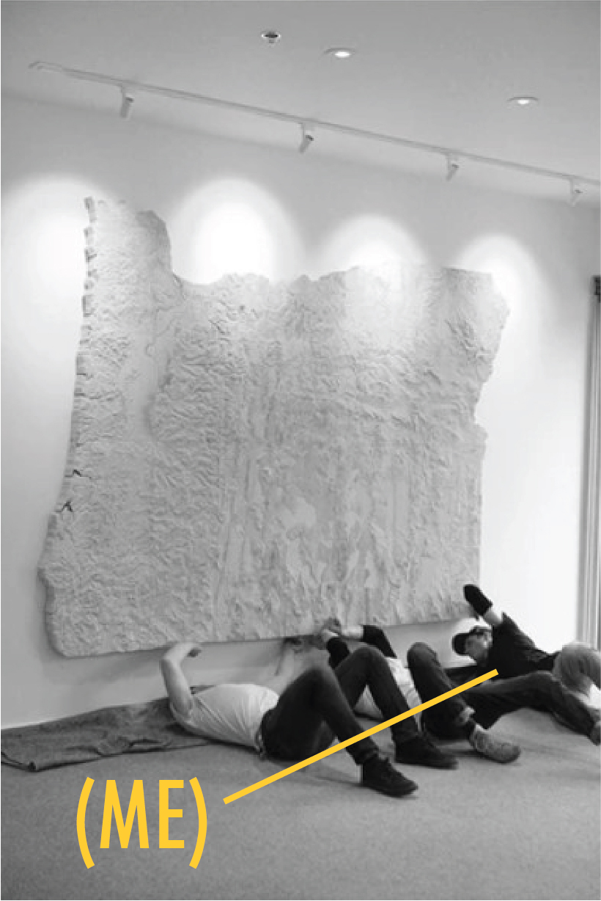

About

After graduating from the California College of the Arts with a degree in furniture design, I began my career as a woodworker and metalworker. As a woodworker, I worked on a large scale carved topographic map of the state of Oregon which inspired me to pursue a career in GIS. I went on to complete the Portland State University GIS Graduate Certificate program and the University of Wisconsin Masters of GIS program.
As a cartographer, I've enjoyed exploring the intersection of art and science. As a believer in the power of visual communication, I strive to tell a story that brings the data alive and resonates with map users. As a member of the geospatial community, I strive to apply my GIS abilities to help build a more sustainable and equitable future. I volunteer with the Oregon Wild GIS department and enjoy taking on GIS side projects with local parks groups in Portland where I reside. Perhaps the best cartography advice I recieved as a student was this: Don't fall in love with your maps. They don't belong to you, maps are for the users.
For mapping inquiries, projects, or questions, please contact me at:
carlnodzenski@gmail.com